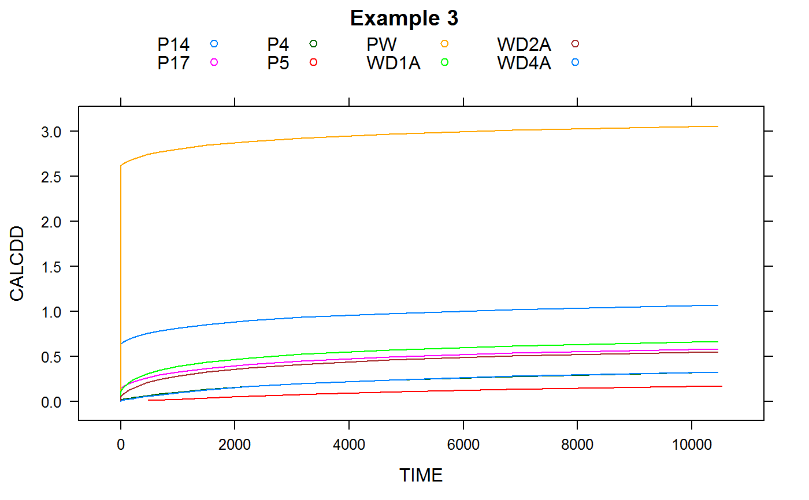

wtReadPlotFile.RdRead WTAQ plot file
wtReadPlotFile(plotfile, logtimes = NULL, toListView = FALSE, dbg = FALSE)
| plotfile | plot file as produced by WTAQ model, either in “list view”, i.e. in which data is organised in blocks being written one after the other or in “matrix view”, i.e. in which data is organised in one table only |
|---|---|
| logtimes | if TRUE, time steps are supposed to be logarithmic, i.e. it is assumed that the result plot file is in “matrix form”. Otherwise (logtimes == FALSE) it is assumed that the result plot file is in “list form” as each data block can contain different timestamps. Setting this argument accelerates the reading of the results as the result plot file does not have to be read twice (once for the format, once for the actual data). |
| toListView | if TRUE, results are always returned in “list view” in which drawdowns of different wells do not appear in different columns but all in the same column CALCDD. A column WELL is added to indicate the well to which the drawdown belongs. Default: FALSE. |
| dbg | if TRUE, debug messages are shown. Default: FALSE |
### Read plot files as provided with "sample problems" 1 to 3 in WTAQ ### installation files pfile <- system.file("extdata", sprintf("plt.sp%d", 1:3), package = "kwb.wtaq") dat1 <- wtReadPlotFile(pfile[1])#> Timesteps in plot file are expected to be: logarithmic.dat2 <- wtReadPlotFile(pfile[2])#> Timesteps in plot file are expected to be: user-specified.dat3 <- wtReadPlotFile(pfile[3])#> Timesteps in plot file are expected to be: user-specified.### Plot HDPW + HDOB1 + HDOB2 + HDOB3 + HDOB4 over dimensionless time (TDRDSQ) tr1 <- lattice::xyplot(PW + OB1 + OB2 + OB3 + OB4 ~ TDRDSQ, data = dat1, type = "l", auto.key = list(columns = 5), main = "Example 1") ### Plot CALCDD over TIME tr2 <- lattice::xyplot(CALCDD ~ TIME, groups = WELL, data = dat2, type = "l", auto.key = list(columns = 5), main = "Example 2") tr3 <- lattice::xyplot(CALCDD ~ TIME, groups = WELL, data = dat3, type = "l", auto.key = list(columns = 5), main = "Example 3") print(tr1)print(tr2)print(tr3)